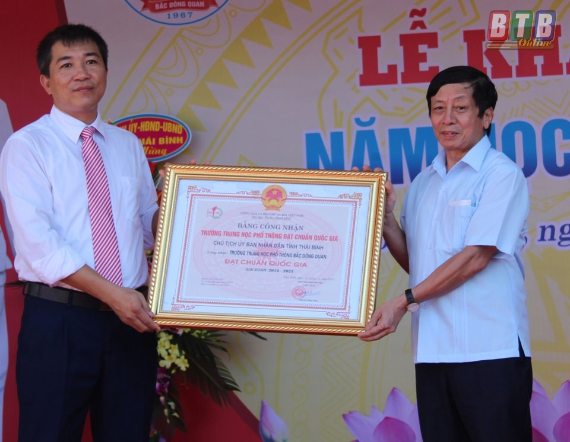

LỄ KỈ NIỆM 36 NĂM NGÀY NHÀ GIÁO VIỆT NAM 20/11
Hoà chung trong không khí cả nước chào mừng ngày Nhà giáo Việt Nam 20-11. Sáng ngày 20/11/2018, Trường THPT Bắc Đông Quan long trọng tổ chức Lễ kỷ niệm 36 năm Ngày Nhà giáo Việt Nam 20/11/1982 – 20/11/2018.
Tham dự buổi lễ, về phía khách mời có: Đồng chí Hoàng Thái Phúc - Tỉnh ủy viên, Bí thư huyện ủy đông Hưng đại diện cho Huyện ủy, HĐND, UBND huyện Đông Hưng; Đại diện Ban cha mẹ học sinh của trường; Đại diện cựu học sinh nhà trường khu vực phía Nam, đại diện cựu học sinh nhà trường khóa 1994 - 1997. Về phía Trường THPT Bắc Đông Quan gồm có: Các thầy cô hội Cựu Giáo chức nhà trường, Ban Giám hiệu nhà trường cùng toàn thể 99 cán bộ, giáo viên, nhân viên trong nhà trường và sự có mặt của gần 2000 em học sinh năm học 2018 – 2019 của trường.
Buổi lễ là dịp ôn lại những truyền thống tốt đẹp, vẻ vang, cao quý của ngày Nhà giáo Việt Nam, đồng thời đánh giá kết quả thực hiện nhiệm vụ của thầy và trò nhà trường đã đạt được trong năm học 2017 – 2018; tôn vinh những giá trị mà những người làm công tác giáo dục đang ngày đêm cống hiến và là dịp để các em học sinh tỏ lòng tri ân đến các thầy cô giáo đã truyền cho các em có kiến thức để tự tin vững bước trên con đường tương lai.
Sau chương trình văn nghệ chào mừng, thầy Phan Văn Đức – Bí thư Chi bộ, Hiệu trưởng nhà trường đã đọc diễn văn chào mừng ngày hiến chương các nhà giáo. Trong bài diễn văn thầy hiệu trưởng nhấn mạnh thực tế xã hội đã đang và luôn mãi mãi trân trọng tôn vinh nghề giáo cao quý. Các thầy, các cô của nhà trường đã đào tạo ra những thế hệ học sinh tương lai của đất nước, các thầy các cô đã khơi nguồn cảm hứng, động viên và đánh thức những tiềm năng ẩn sâu cho học sinh, để rồi các em sẽ tìm tòi và khám phá những giá trị thiết thực trong cuộc sống.
Suốt 51 năm qua Nhà trường đã không ngừng lớn mạnh về mọi mặt có được những thành tích đó là công lao của tất cả các thế hệ cán bộ, giáo viên, nhân viên và học sinh sinh viên của nhà trường, trong đó đội ngũ các thầy cô giáo có vai trò hết sức to lớn. Ngày 20/11, ngày truyền thống của ngành giáo dục Việt Nam, ngày tôn vinh những người làm công tác giáo dục, cũng chính là dịp để mọi thế hệ học trò bày tỏ lòng tri ân đặc biệt tới các thầy cô giáo, những người đã và đang miệt mài với sự nghiệp trồng người.
Trong bầu không khí trang trọng, vui tươi và ấm áp tình thầy trò, học sinh khối 11 năm học 2018 – 2019 đã có một chương trình văn nghệ tri ân thầy cô rất ấn tượng, nhiều cảm xúc và xúc động cùng với những lời chúc tốt đẹp nhất thể hiện tình cảm chân thành biết ơn sâu sắc nhất tới các thầy cô của trường.
Tại buổi Lễ kỷ niệm đại diện cho HU-HĐND-UBND huyện Đông Hưng, Công an huyện, Ban chỉ huy quân sự huyện, bệnh viện đa khoa, Trung tâm y tế, huyện Đoàn, tổ dân phố 8 và nhiều đơn vị khác đến chúc mừng nhà trường.
Sau phần tặng hoa và phát biểu chúc mừng của lãnh đạo các đơn vị khách mời, đại diện Công đoàn trường đã tổng kết và phát thưởng cho các hoạt động thi đua của cán bộ, giáo viên, nhân viên nhà trường trong năm học 2017 – 2018 và các hoạt động thi đua của thầy và trò chào mừng ngày Nhà giáo Việt Nam.
Lễ kỉ niệm kết thúc trong không khí phấn khởi, vui tươi, tràn ngập sắc hoa rực rỡ trong ngày Lễ tôn vinh các Nhà giáo Việt Nam, đem đến cho thầy và trò Trường THPT Bắc Đông Quan niềm vui và ý nghĩa to lớn, tăng thêm sức mạnh để hoàn thành tốt nhiệm vụ trong năm học 2018 – 2019.
